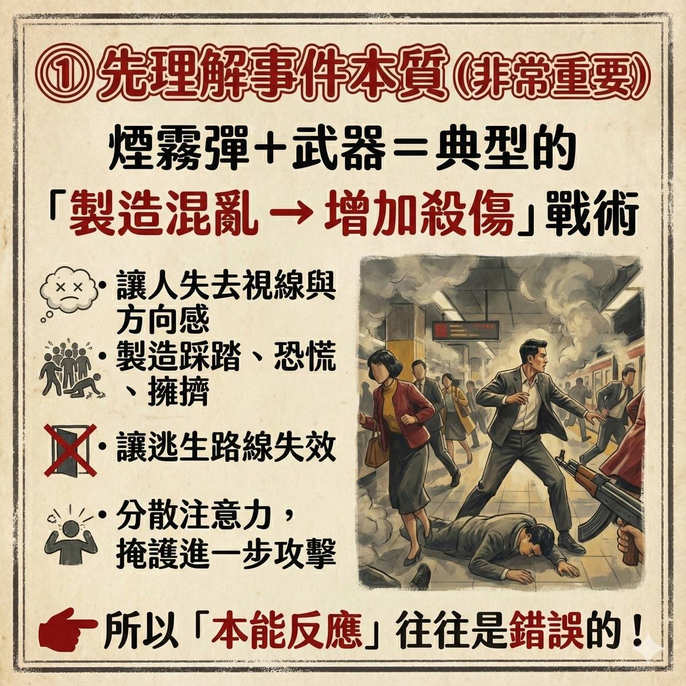
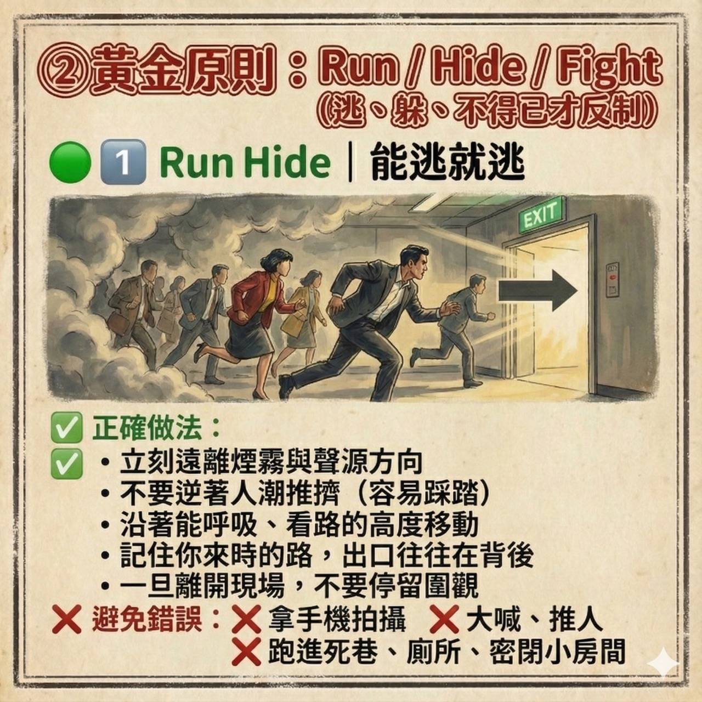
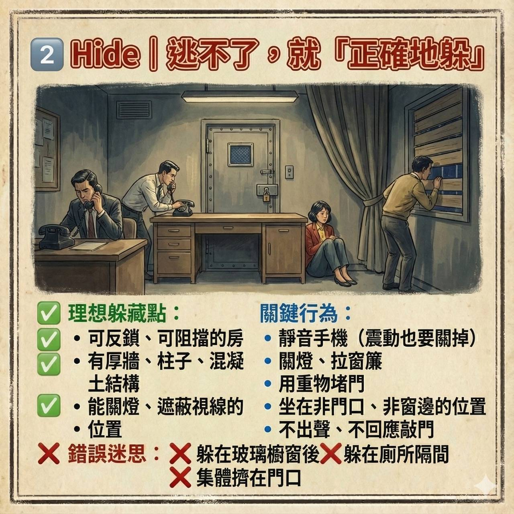
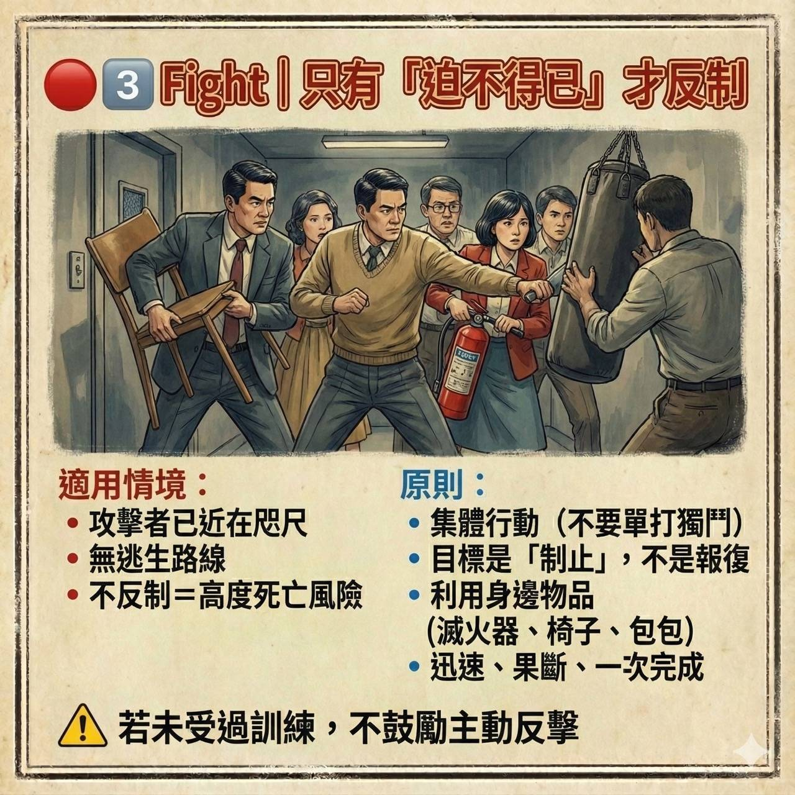
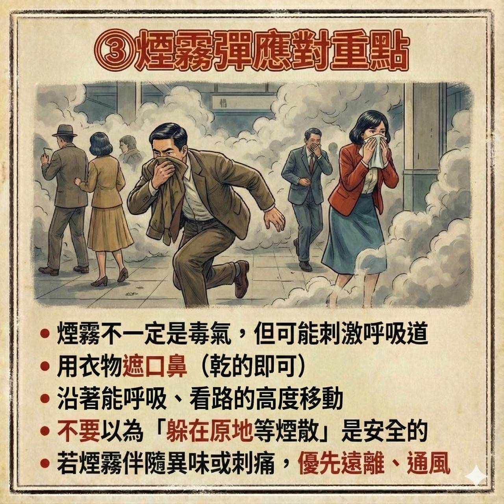
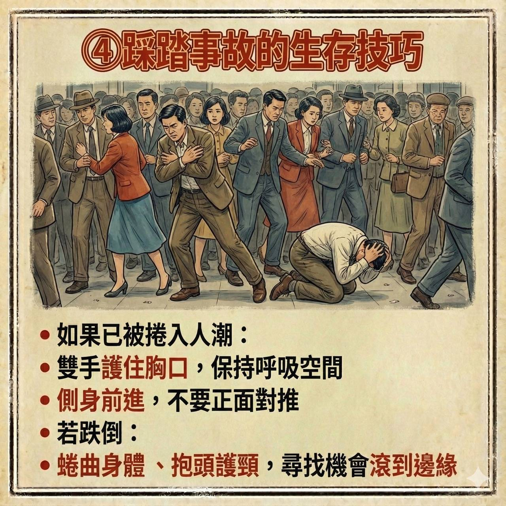
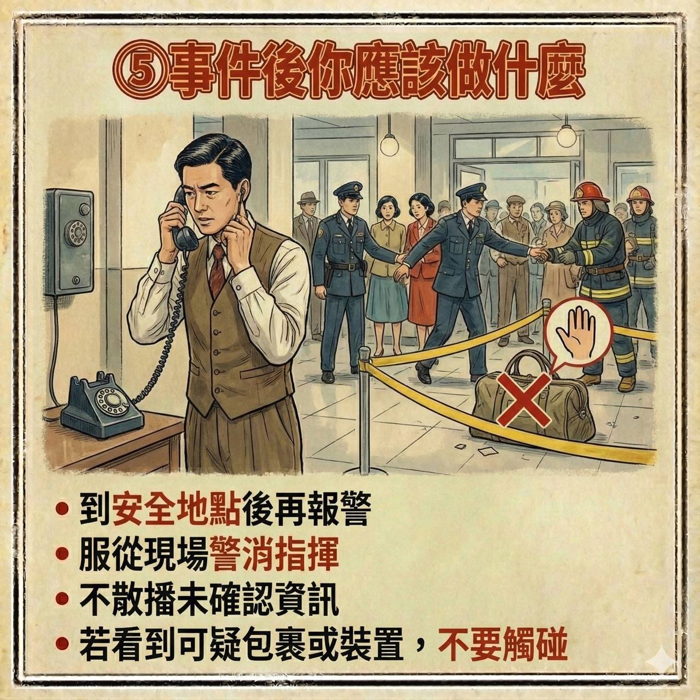
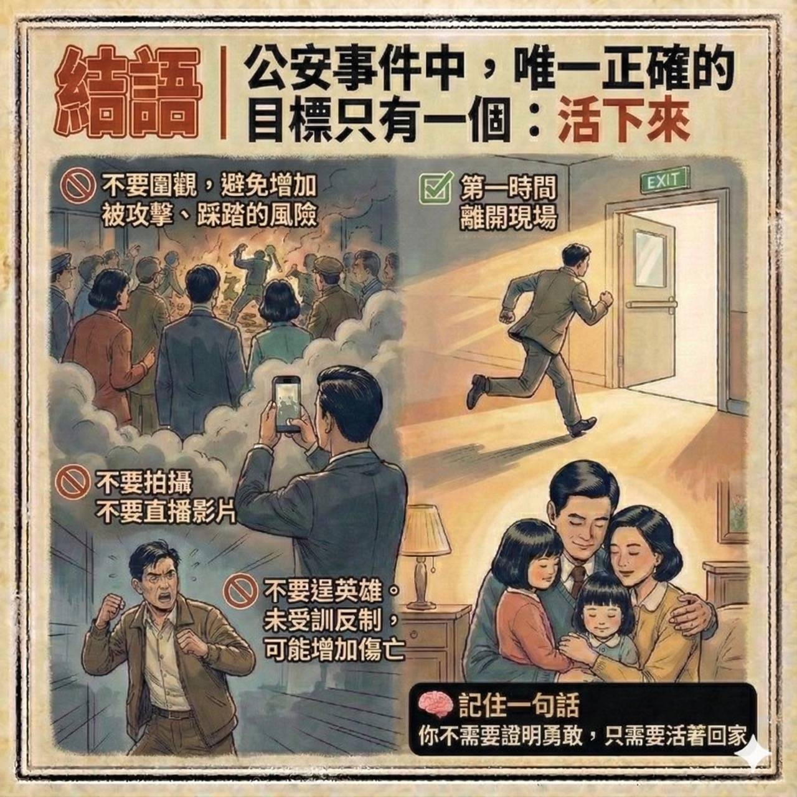
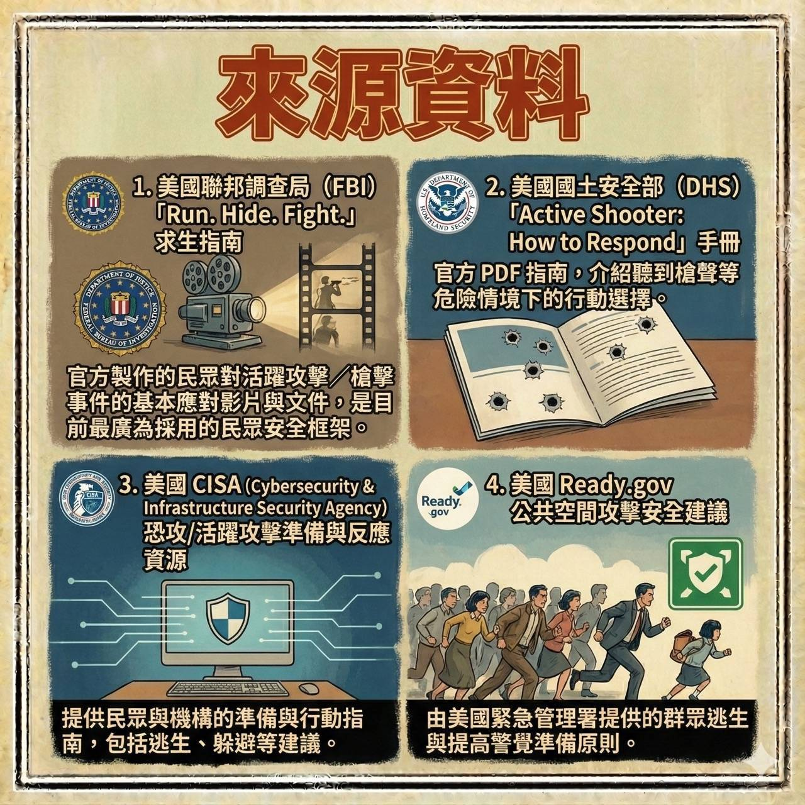

所有圖片一覽
以下按照順序展示所有10張應對指南圖片：
001: 公共場所發生攻擊時

002: 先理解事件本質

003: 黃金原則

004: 正確地躲藏

005: 不得已才反制

006: 煙霧彈應對

007: 踩踏事故生存技巧

008: 事件後處理

009: 結語

010: 來源資料
點擊任意圖片可放大查看。確保所有圖片檔案(001.jpg~010.jpg)與本網頁位於同一資料夾。
先理解事件本質
煙霧彈 + 武器 = 典型的「製造混亂 → 增加殺傷」戰術，目的是：
- 讓人失去視線與方向感
- 製造踩踏、恐慌、擁擠
- 讓逃生路線失效
- 分散注意力，掩護進一步攻擊
所以「本能反應」往往是錯誤的！
關鍵數據
- 70% 的人在煙霧中會失去方向感
- 40% 的傷亡發生在最初的混亂階段
- 訓練有素的逃生者生存率提高 300%
煙霧彈應對重點
- 煙霧不一定是毒氣，但可能刺激呼吸道
- 用衣物遮口鼻（乾的即可）
- 沿著能呼吸、看路的高度移動
- 不要以為「躲在原地等煙散」是安全的
- 若煙霧伴隨果味或刺痛，優先遠離、通風
煙霧彈影響數據
- 煙霧完全擴散時間：15-30秒
- 可見度降低至：1-3公尺
- 呼吸道刺激反應時間：10-20秒
- 低姿勢逃生速度降低：40%
黃金原則：Run / Hide / Fight
（逃、躲、不得已才反制）
原則應用統計
70%
應該選擇逃離
大多數情況下逃生是最佳選擇
25%
應該選擇躲藏
當無法逃離時的正確選擇
5%
不得已才反制
僅在最極端情況下使用
1. 能逃就逃 (Run)
正確做法：
- 立刻遠離煙霧與聲源方向
- 不要逆著人潮推擠（容易踩踏）
- 沿著能呼吸、看路的高度移動
- 記住你來時的路，出口往往在背後
- 一旦離開現場，不要停留圍觀
避免錯誤：
- 拿手機拍攝
- 大喊、推人
- 跑進死巷、廁所、密閉小房間
2. 正確地躲 (Hide)
理想躲藏點：
- 可反鎖、可阻擋的房間
- 有厚牆、柱子、混凝土結構
- 能關燈、遮蔽視線的位置
關鍵行為：
- 靜音手機（震動也要關掉）
- 關燈、拉窗簾
- 用重物堵門
- 坐在非門口、非窗邊的位置
- 不出聲、不回應敲門
3. 不得已才反制 (Fight)
適用情境：
- 攻擊者已近在咫尺
- 無逃生路線
- 不反制＝高度死亡風險
原則：
- 集體行動（不要單打獨鬥）
- 目標是「制止」，不是報復
- 利用身邊物品（滅火器、椅子、包包）
- 迅速、果斷、一次完成
若未受過訓練，不鼓勵主動反擊
踩踏事故的生存技巧
- 如果已被捲入人潮：
- 雙手護住胸口，保持呼吸空間
- 側身前進，不要正面對推
- 若跌倒：
- 蜷曲身體、抱頭護頸，尋找機會滾到邊緣
踩踏事故數據
- 人群密度超過 4人/m² 時易發生踩踏
- 恐慌奔跑速度可達 5-7m/s
- 胸腔受壓 30kg 以上即無法呼吸
- 缺氧 4-6分鐘 可導致腦損傷或死亡
結語
公安事件中，唯一正確的目標只有一個：活下來
- 第一時間離開現場
- 不要圍觀，避免增加被攻擊、踩踏的風險
- 不要拍攝不要直播影片
- 不要逞英雄未受訓反制，可能增加傷亡
記住一句話：你不需要證明勇敢，只需要活著回家
訓練效果數據
85%
訓練者生存率
接受過應急訓練者的平均生存率
35%
未訓練者生存率
未接受訓練者的平均生存率
143%
生存率提升
訓練帶來生存率提升百分比
來源資料
官方製作的民眾對活躍攻擊／槍擊事件的基本應對影片與文件，是目前最廣為採用的民眾安全框架。
美國聯邦調查局 (FBI)
Run.Hide.Fight. 求生指南
2013年發布，已培訓超過200萬人
美國國土安全部 (DHS)
Active Shooter: How to Respond 手冊官方PDF指南
下載次數超過500萬次
美國CISA
Cybersecurity & Infrastructure Security Agency
覆蓋全美85%關鍵基礎設施
Ready.gov
美國緊急管理署提供的群眾逃生與提高警覺準備原則
每月訪問量超過100萬次
指南影響力數據
- 全球超過 50個國家 採用類似原則
- 每年培訓 超過1000萬 人次
- 指南翻譯成 30多種 語言
- 實際應用成功率達 87%